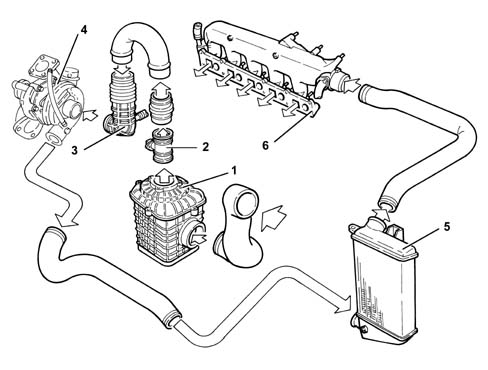
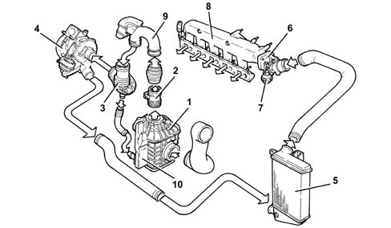
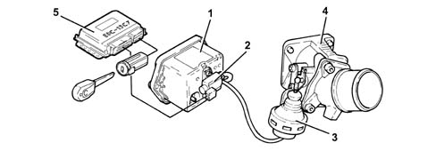
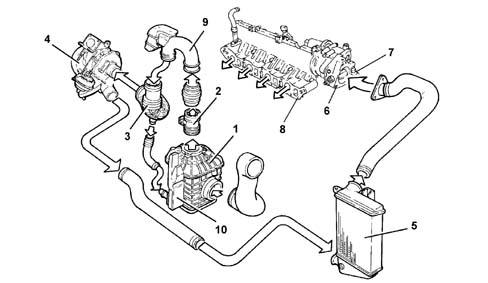
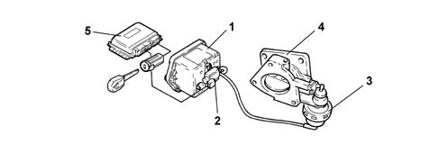
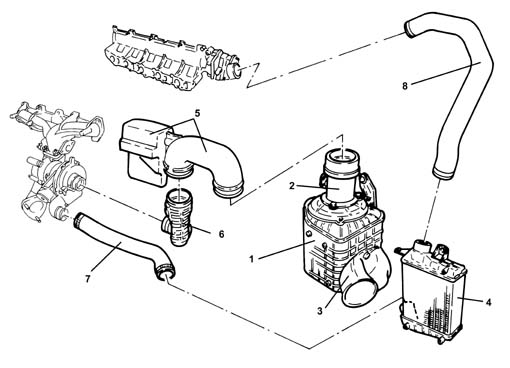

Introduction - ENGINE AIR SUPPLY CIRCUIT
- Path
- Descriptions > 10 ENGINE > 1048 ENGINE AIR SUPPLY CIRCUIT > Introduction - ENGINE AIR SUPPLY CIRCUIT
- Kind
- system description
- Applies to
- engines: 1.6 TS , 1.8 TS, 2.0 JTS, 2.5 V6, 3.2 V6, 1.9 JTD 8v , 1.9 JTD 16v, 2.0 JTS, 2.4 JTD 10v, 2.4 JTD 20v; all production periods
- Interactive page
- https://sloeber94.github.io/elrnDB-a156/en/#/3239201
Applies to: engines: 1.9 JTD 8v , 2.4 JTD 10v; all production periods
AIR SUPPLY SYSTEM

1, Complete air filter 2, Flow meter 3, Hose 4, Turbocharger 5, Air/air heat exchanger (intercooler) 6, Inlet chamber
Applies to: engines: 1.9 JTD 8v , 2.4 JTD 10v; all production periods; only with equipment: Euro 3
AIR SUPPLY SYSTEM
.

1 - Air filter 2 - Flow meter 3 - Corrugated hose 4 - Turbocharger 5 - Air-Air heat exchanger (intercooler) 6 - Throttle body 7 - Throttle body actuator 8 - Air chamber 9 - Hose with resonator 10 - Bottom resonator
THROTTLE BODY
In order to limit engine shake during switching off, the control unit controls the immediate closure of the butterfly at intake.
Under all other operating conditions, the butterfly remains open.

1 - Vacuum reservoir 2 - Solenoid 3 - Throttle body actuator 4 - Throttle body 5 - Fuel injection control unit
Applies to: engines: 2.0 JTS, 2.0 JTS; all production periods
CONSTRUCTION FEATURES
The air intake circuit consists of various components which ensure that the air flow and filtering required by the engine in all operating conditions is correctly directed to the cylinders.
Applies to: engines: 1.9 JTD 16v; all production periods
COMPOSITION
STRUCTURE
AIR SUPPLY SYSTEM

1 - Air filter 2 - Flow meter 3 - Corrugated hose 4 - Turbocharger 5 - Air-Air heat exchanger (intercooler) 6 - Throttle body 7 - Throttle body actuator 8 - Air chamber 9 - Hose with resonator 10 - Resonator
COMPONENT DESCRIPTION
BUTTERFLY CASING
Construction features
To reduce engine judder when it is being switched off, a throttle body has been fitted upstream of the air chamber to cut off air flow to the cylinders.
Under all other operating conditions, the throttle body remains open.

1 - Vacuum reservoir 2 - Solenoid 3 - Throttle body actuator 4 - Throttle body 5 - Fuel injection control unit
Operation
With the engine switched off, the throttle is open because there is no vacuum.
With the engine running, the throttle is open because, as the Pierburg solenoid valve is not supplied, it prevents the vacuum from reaching the pneumatic actuator.
The vacuum accumulates in the reservoir whilst the engine is running.
Whilst the engine is being switched off (when the key is turned to the OFF position), the control unit keeps the actuator relay feed supplied for 4 or 5 seconds and, at the same time, places the Pierburg solenoid valve to earth which, on opening, sends the vacuum, which has accumulated in the vacuum reservoir, to the pneumatic actuator which closes the butterfly interrupting the flow of air to the cylinders.
Applies to: engines: 2.4 JTD 20v; all production periods
CONSTRUCTION FEATURES
The intake air is filtered and directed to the exhaust gas turbocharger.
Before reaching the engine, the compressed air is cooled in the air/air heat exchanger.

1. Butterfly casing 2. Pneumatic actuator 3. Pipe connecting the pneumatic actuator to the Pierburg solenoid valve 4. Pierburg solenoid valve operated by engine management control unit for sending vacuum to pneumatic actuator 5. Pipe connecting Pierburg solenoid to vacuum tank 6. Pipe connecting vacuum tank to vacuum pump
BUTTERFLY CASING
Construction features
To reduce engine noise when it is being switched off (noise produced by the DVA flywheel), a throttle has been introduced in the inlet manifold with the task of stopping the flow of air to the cylinders.
Composition
the system consists of:
1. Air filter 2. Air flow meter 3. Cold air intake 4. Air-air heat exchanger (intercooler) 5. Air hose with resonator 6. Turbocharger air inlet corrugated hose 7. Pressurized air flexible hose for intercooler 8. Pressurized air flexible hose for intake chamber
Operation
With the engine switched off, the butterfly is open because there is no vacuum.
With the engine running, the throttle is open because, as the Pierburg solenoid valve is not supplied, it prevents the vacuum from reaching the pneumatic actuator.
The vacuum accumulates in the reservoir whilst the engine is running.
Whilst the engine is being switched off (when the key is turned to the OFF position), the control unit keeps the actuator relay feed supplied for 4 or 5 seconds and, at the same time, places the Pierburg solenoid valve to earth which, on opening, sends the vacuum, which has accumulated in the vacuum reservoir, to the pneumatic actuator which closes the throttle interrupting the flow of air to the cylinders.